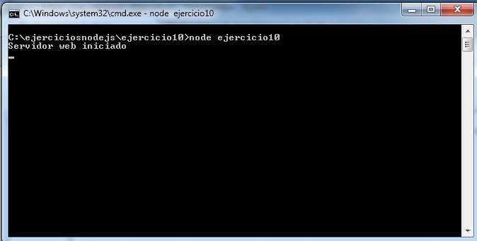
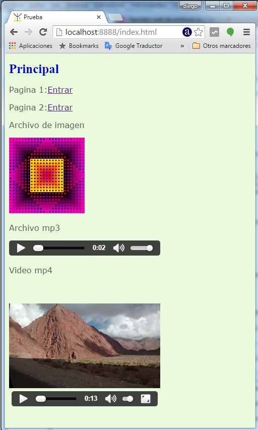
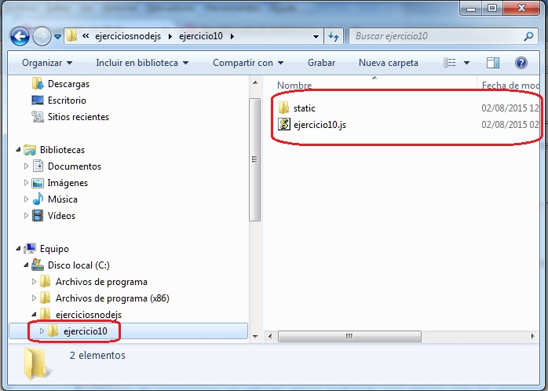
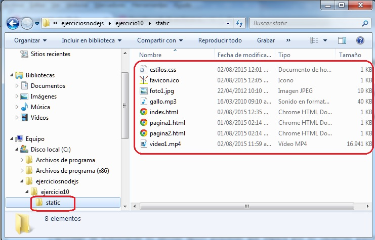

Vimos en el concepto anterior como crear un servidor web solo de páginas HTML. Ahora extenderemos nuestro servidor web de páginas estáticas a otros formatos de archivos.
Un sitio web como sabemos está constituido entre otro por archivos html, js, css, jpg, gif, mp3, mp4, ico etc.
Siempre que devolvemos un recurso a un cliente (normalmente el navegador) en la cabecera de respuesta indicamos el tipo de recurso devuelto:
respuesta.writeHead(200, {'Content-Type': 'text/html'});
respuesta.write(contenido);
respuesta.end();
Debemos inicializar el valor 'Content-Type' con el tipo de recurso a devolver, como en el concepto anterior solo devolvíamos archivos html nos bastaba con indicar siempre el valor: 'text/html'
Los MIME Types son la manera estándar de mandar contenido a través de internet. Especifican a cada archivo con su tipo de contenido.
Según el tipo de archivo que retornamos indicamos un valor distinto a Content-Type. Ejemplos de valores:
Content-type: text/html Content-type: text/css Content-type: image/jpg Content-type: image/x-icon Content-type: audio/mpeg3 Content-type: video/mp4 etc.
Un listado bastante completo de tipos MIME lo podemos ver en este sitio.
Confeccionaremos un sitio que contenga una serie de archivos html, css, jpg, mp3, mp4 e ico.
Crearemos un directorio llamado ejercicio10 y dentro de este otro directorio interno llamado static donde dispondremos todos los archivos html,css, jpg, mp3, mp4 e ico.
En el directorio ejercicio10 tipearemos nuestra aplicacion Node.js que tiene por objetivo servir las páginas HTML y otros recursos que pidan los navegadores web.
La aplicación Node.js la llamamos ejercicio10.js
ejercicio10.js
var http=require('http');
var url=require('url');
var fs=require('fs');
var mime = {
'html' : 'text/html',
'css' : 'text/css',
'jpg' : 'image/jpg',
'ico' : 'image/x-icon',
'mp3' : 'audio/mpeg3',
'mp4' : 'video/mp4'
};
var servidor=http.createServer(function(pedido,respuesta){
var objetourl = url.parse(pedido.url);
var camino='static'+objetourl.pathname;
if (camino=='static/')
camino='static/index.html';
fs.exists(camino,function(existe){
if (existe) {
fs.readFile(camino,function(error,contenido){
if (error) {
respuesta.writeHead(500, {'Content-Type': 'text/plain'});
respuesta.write('Error interno');
respuesta.end();
} else {
var vec = camino.split('.');
var extension=vec[vec.length-1];
var mimearchivo=mime[extension];
respuesta.writeHead(200, {'Content-Type': mimearchivo});
respuesta.write(contenido);
respuesta.end();
}
});
} else {
respuesta.writeHead(404, {'Content-Type': 'text/html'});
respuesta.write('<!doctype html><html><head></head><body>Recurso inexistente</body></html>');
respuesta.end();
}
});
});
servidor.listen(8888);
console.log('Servidor web iniciado');
Este proyecto lo puede descargar en un zip con todos los archivos js, html, jpg etc. desde este enlace : ejercicio10
Veamos los cambios que debemos hacer con respecto al concepto anterior que servíamos solo archivos HTML.
Primero definimos un objeto literal asociando las distintas extensiones de archivos y su valor MIME:
var mime = {
'html' : 'text/html',
'css' : 'text/css',
'jpg' : 'image/jpg',
'ico' : 'image/x-icon',
'mp3' : 'audio/mpeg3',
'mp4' : 'video/mp4'
};
Todo el resto del código es idéntico al concepto anterior salvo cuando tenemos que retornar el recurso que solicita el navegador:
var vec = camino.split('.');
var extension=vec[vec.length-1];
var mimearchivo=mime[extension];
respuesta.writeHead(200, {'Content-Type': mimearchivo});
respuesta.write(contenido);
respuesta.end();
Descomponemos en un vector separando por el punto la variable camino:
var vec = camino.split('.');
Si tenemos en la variable camino el valor:
/pagina1.htmlLuego de ejecutarse el método split pidiendo que separa por el caracter punto tenemos en la variable vec dos elementos:
vec[0] tiene almacenado /pagina1 vec[1] tiene almacenado html
Sacamos el último elemento del vector que en definitiva almacena la extensión del archivo:
var extension=vec[vec.length-1];
Seguidamente rescatamos la propiedad del objeto literal mime:
var mimearchivo=mime[extension];
Por ejemplo si tenemos en la variable extension el valor 'html' luego en la variable mimearchivo se almacena: 'text/html' que es el valor para dicha propiedad definida en la variable mime.
Ahora llamamos al métdodo writeHead donde retornamos el tipo MIME para dicha extensión:
respuesta.writeHead(200, {'Content-Type': mimearchivo});
El resto de este programa no sufre cambios con respecto a devolver siempre archivos HTML.
Luego de iniciar la aplicación desde la consola:

Ya podemos solicitar páginas al servidor que acabamos de inicializar y comprobar que nos retorna los distintos recursos enumerados dentro de cada página (imágenes, audios, videos, hojas de estilo etc.):

La organización de los archivos en el disco duro es:

Como vemos en la carpeta ejercicio10 se ubica la aplicación Node.js y la carpeta static con todos los recursos:

En nuestro ejemplo hemos limitado a servir 6 formatos de archivos distintos:
var mime = {
'html' : 'text/html',
'css' : 'text/css',
'jpg' : 'image/jpg',
'ico' : 'image/x-icon',
'mp3' : 'audio/mpeg3',
'mp4' : 'video/mp4'
};
Para servir otros formatos de archivos deberíamos agregar al objeto literal mime los valores respectivos que define el protocolo MIME.